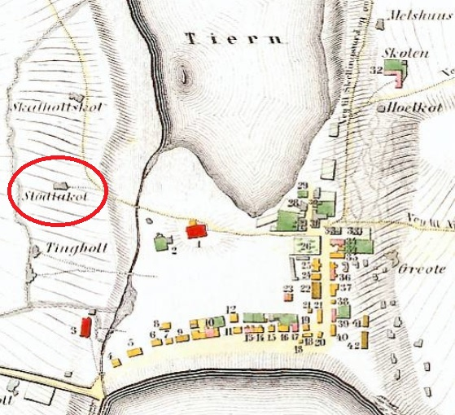

1801
Stöðlakot var ein af hjáleigum Víkur (Reykjavíkur) og ásamt Skálholtskoti einu hjáleigurnar austan læks. Á þessum uppdrætti frá 1801 er rauður hringur utan um Stöðlakot en ofar á myndinni má sjá Skálholtskot og neðar Þingholt sem var nýlega reistur og stóð þar sem nú er Þingholtsstræti 3 og Þingholtin eru kennd við.
Sjá má götuslóða sem gengur frá miðbænum að Stöðlakoti og þaðan að Skálholtskoti og svo áfram að Móakoti. Þessi slóði varð síðar Laufásvegur.

Uppdráttur af Reykjavík1801